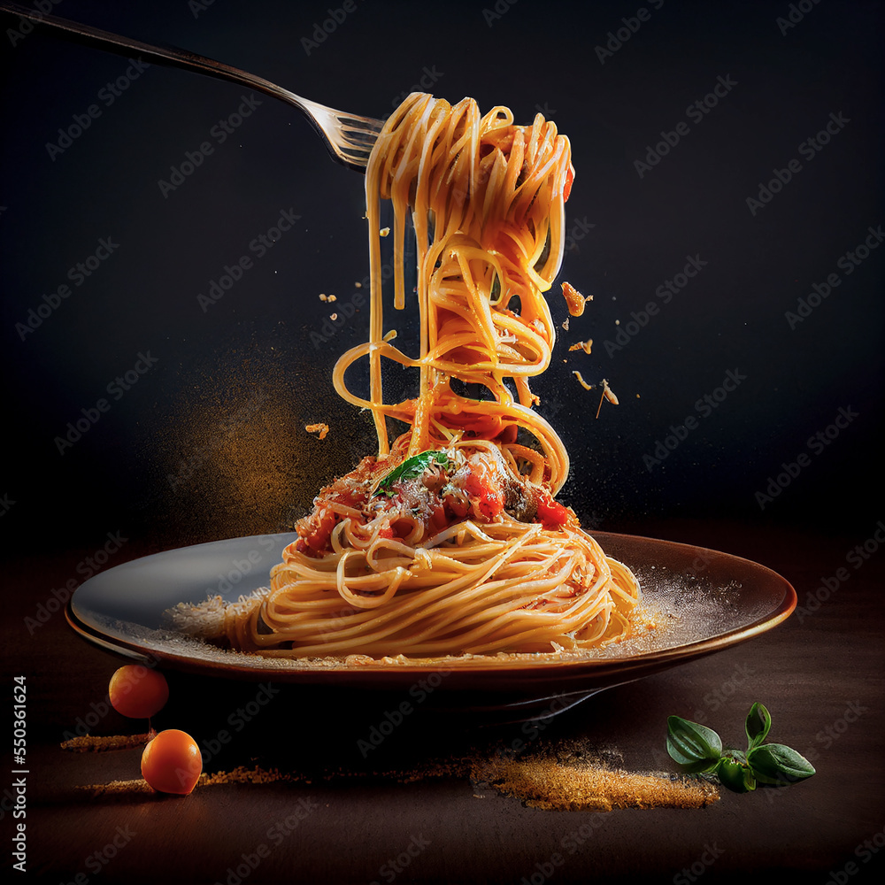

Home
Spaghetti Bolognese

De Belgische versie van een spaghetti bolognaise
Een goede tip is om de saus zo lang mogelijk in de oven te laten garen. Zo krijgt de saus een diepere smaak en zal het pastagerecht nog beter smaken!
Ingredients
- Gemengd gehakt
- Ajuin
- Wortels
- Selder
- Look
- Pancetta
- Champignons
- Laurierblaadjes
- Tijm
- Rozemarijn
- Tomatenpuree
- Harissa
- Tomatenblokjes
- Tomaten passata
- Tomaten
- Spaghetti
Steps
- Verwarm de oven voor op 160°C.
- Pel de uien en snipper ze in kleine stukjes.
- Zet een grote en ovenvaste stoofpot op een stevig vuur. Verhit er een scheutje olijfolie in.
- Zet het vuur lager en stoof er de stukjes ui in. Roer regelmatig en laat ze niet bakken!
- Schil de wortelen met een dunschiller. Snijd ze in kleine blokjes. Laat ook de wortels meestoven.
- Spoel de selderstengels. Snijd de stengels in kleine blokjes en voeg toe aan de stovende ui. Roer regelmatig even in de pot met fijne groenten.
- Verhit een scheutje olijfolie in een pan.
- Pel de teentjes look en plet tot een pulp. Voeg toe aan de kookpot.
- Snijd de de dikke sneetjes pancetta in kleine blokjes en bak ze in de pan met olie.
- Snijd de champignons doormidden en voeg toe aan de stovende groenten.
- Schep de gebakken pancetta uit de pan en doe in de stoofpot. Doe het gehakt in de pan en verdeel het in onregelmatige stukken over de bodem. Laat het vlees rustig bakken op een matig vuur, tot het een goudbruin korstje krijgt.
- Maak een bouquet garni van de laurierblaadjes, tijm, rozemarijn en verse oregano. Voeg de verse kruiden toe aan de stoofpot en meng onder de stovende groenten.
- Doe de tomatenpuree en de harissa bij de groenten en laat kort even meebakken. Blus het geheel met de rode wijn.
- Doe het gehakt bij de saus als het vlees gaar is.
- Voeg de tomatenblokjes en tomatenpassata toe aan de saus. Snijd de tomaten in grove stukken en voeg ook deze toe aan de saus. Kruid de saus met peper en zout.
- Roer door de saus, zet het deksel op de pot en zet de stoofpot in de voorverwarmde oven. Laat minstens 1 uur tot 3 uur pruttelen in de oven. Hoe langer je de saus laat garen, hoe meer smaak de saus zal hebben!
- Breng een ruime kookpot met water aan de kook. Voeg een flinke snuif zout toe aan het water.
- Kook de spaghetti gaar volgens de instructies op de verpakking.
- Haal de saus uit de oven. Vis het uitgekookte kruidentuiltje uit de pot. Serveer de pasta op een bord met een flinke portie saus. Werk de spaghetti bolognaise af met geraspte kaas.